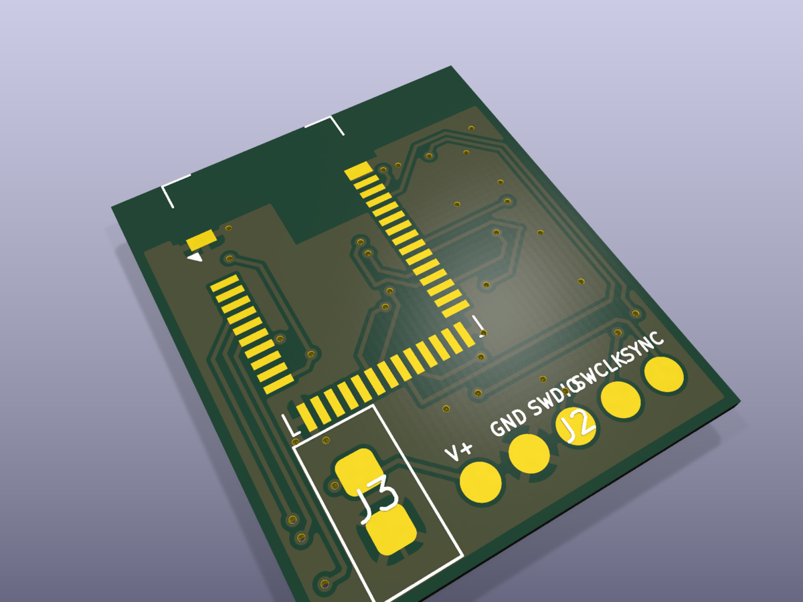
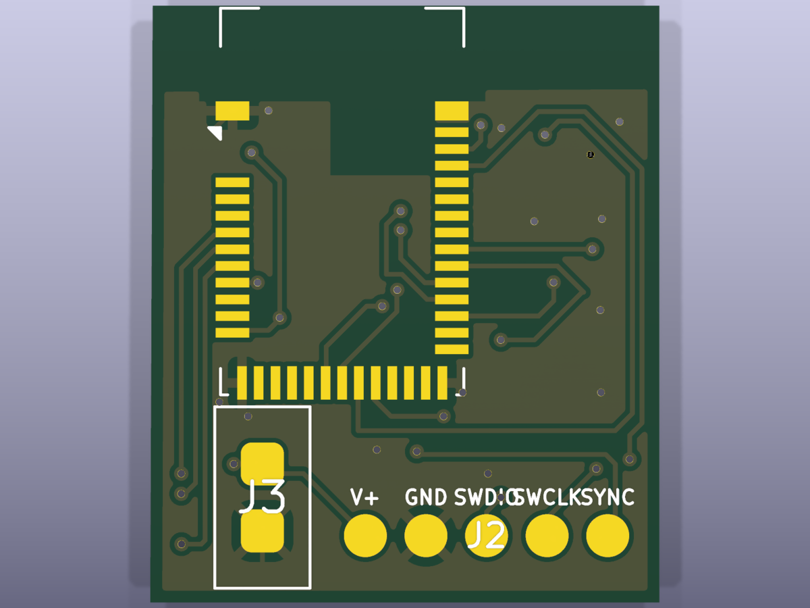
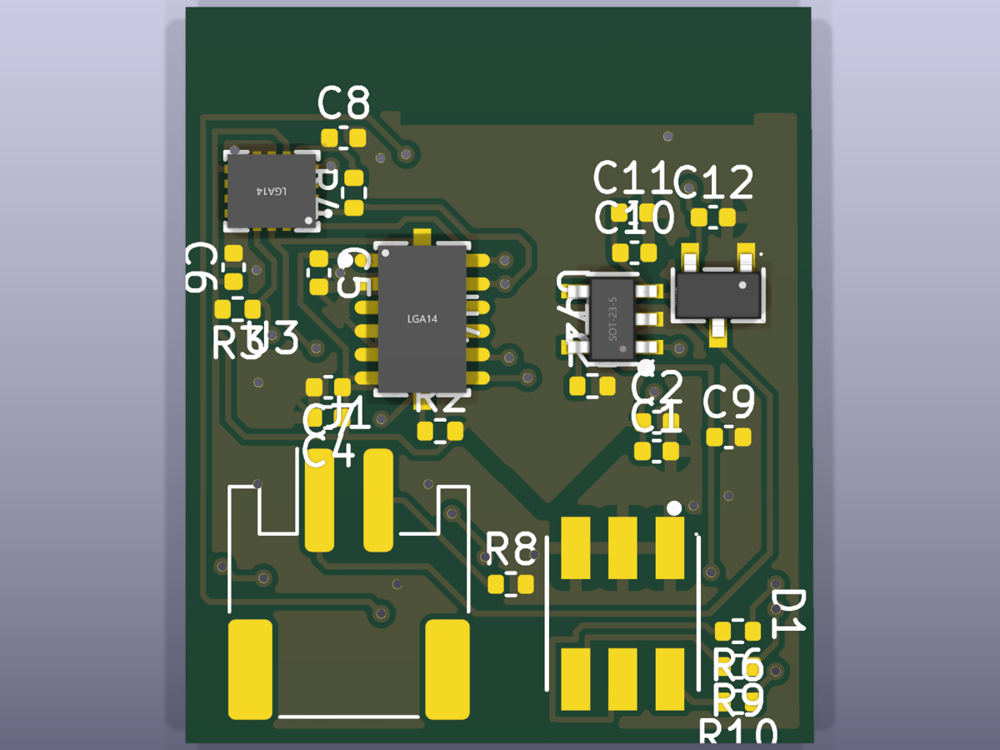
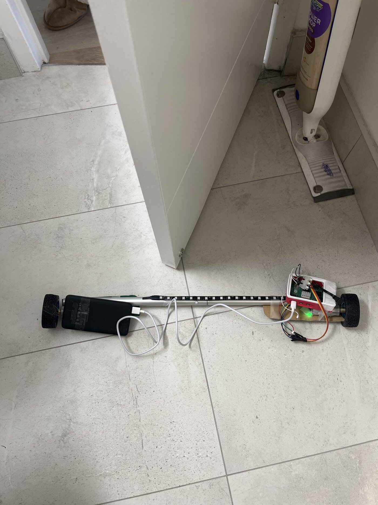
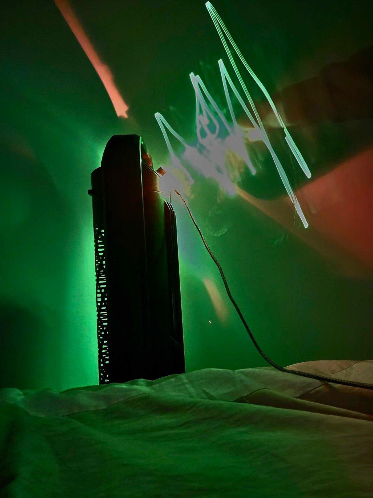

1.Measurement approach
A strike on a heavy bag produces a short transient, lasting tens of milliseconds, with peak acceleration well beyond the ±16 g range of a typical IMU. Measuring it requires two sensors and continuous buffering:
- an ADXL375 (±200 g) that stays in range through the impact peak itself,
- an ICM-42688-P 6-axis IMU for the motion around the hit: limb orientation, swing, retraction,
- a RAM ring buffer that records continuously, so that when the impact trigger fires the pod already holds about 50 ms of pre-impact data and then records the following 200 ms.
2.The board
The PCB (design frozen) is built around a Raytac MDBT42Q module, an nRF52832 with a pre-certified antenna and RF layout, which avoids doing RF layout on a small board. Power is a single-cell Li-Po chain: MCP73831 charger, DW01A + FS8205A battery protection, and an MCP1700-3302 LDO. Programming and charging use a 5-pad pogo interface, so there is no connector exposed to impact. The same board is used on all four limbs.
Status: the design is frozen (schematic PDF ↗), but boards are still to be ordered and the ADXL375 placed; no strikes have been captured on hardware yet. Results will be added once boards are built.



3.Dashboard
Captured transients are sent over BLE to a dashboard and logged as training data: strike force per hit, strike count per session, and a heatmap of impact location and force. The aim is to let an athlete track changes in strike force over weeks of training.
4.Roadmap
- OAK-D stereo-inertial fusion: fuse pod IMU data with stereo vision to capture the 3D motion of each strike as well as the impact.
- SWIM waveform visualization: a sequential-wave imprinting pass (Mann) rendering the strike waveforms themselves as a visual layer.

